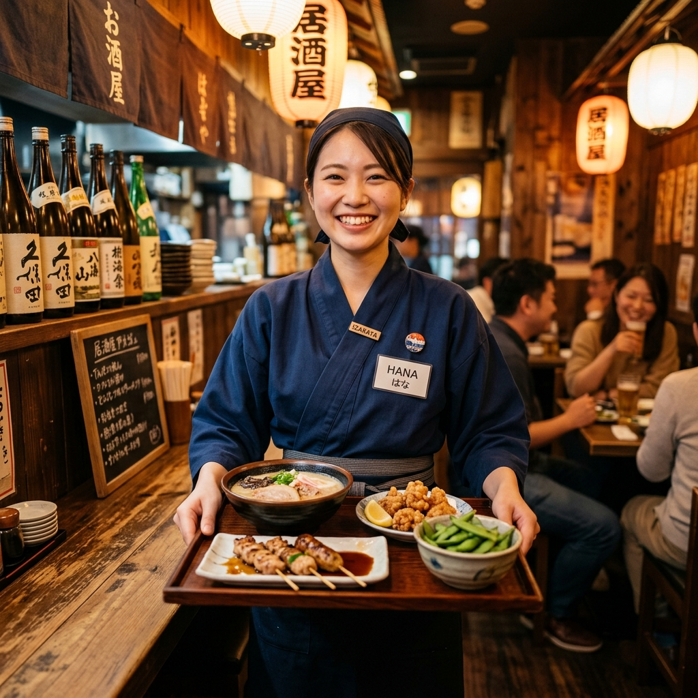
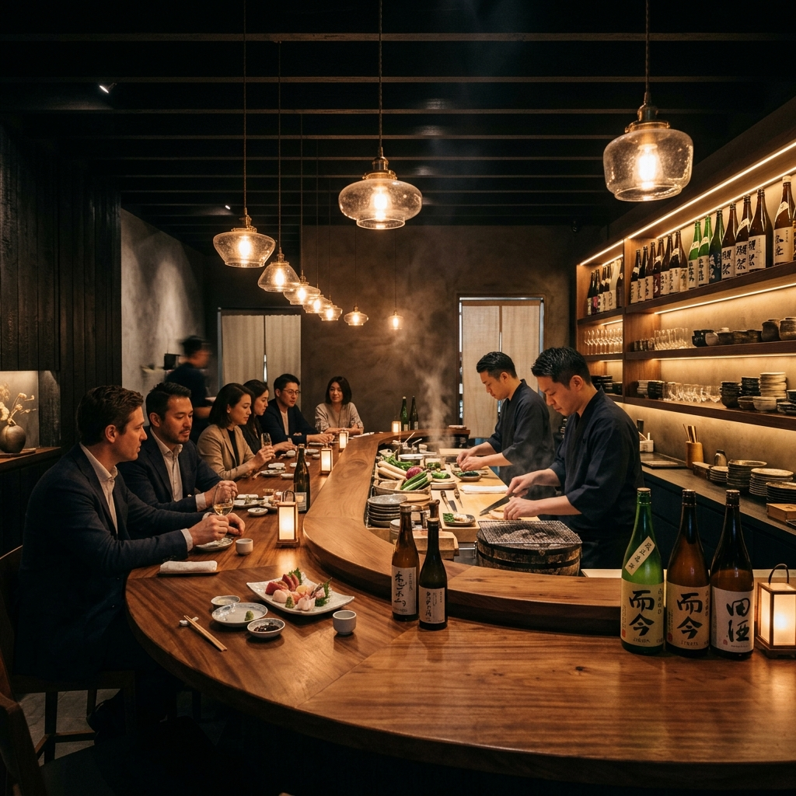

学ぶ。 本物の味と粋な心を 未経験から、
Our Passion こだわり
炭火と旬の食材
毎朝市場で直接目利きした旬の魚介と、厳選された地鶏。それらを最高の状態で提供するため、備長炭の強火で一気に焼き上げます。食材の声を聞き、火と対話する技術が身につきます。
炭火づくしというこだわり
伝統的な和食の技法をベースにしながらも、炭火を使った料理をふんだんに取り入れています。洋の素材を組み合わせたり、遊び心のある串を打ったり。あなたのアイデアが新メニューになることもあります。
粋な接客
お客様のグラスの空き具合、会話のトーン、その日の気分。それらを察知して先回りする「粋な接客」こそが当店の要です。マニュアルのない、人間力で勝負する接客スキルが磨かれます。
Work & Staff 仕事と人
笑顔の連鎖をつくる仕事。
営業中は常に活気に溢れています。
ホールスタッフは、ただ料理を運ぶだけでなく、料理のこだわりをお伝えしたり、お酒の提案をしたり。
厨房と息を合わせて、最高のタイミングでお料理をお出しします。
未経験から始めたスタッフも、今では常連様から名前で呼ばれる看板スタッフに成長しています。
失敗を恐れず、まずは元気な挨拶から始めましょう。


Atmosphere 働く環境
木の温もりと、ほどよい暗さが落ち着く大人の空間。
カウンター越しにお客様の顔が見える、オープンな厨房です。
営業後の「まかない」は、スタッフの楽しみの一つ。
美味しいものを食べて味覚を鍛えることも、大切な修行です。
小さなお店だからこそ、スタッフ同士の距離が近く、家族のような温かい雰囲気で働けます。
Requirements 募集要項
共に「縁」を紡いでくれる仲間をお待ちしています。
| 募集職種 |
アルバイト
正社員（見習い） ホールスタッフ / キッチン調理補助 |
|---|---|
| 仕事内容 |
【ホール】接客、オーダー、配膳、ドリンク作成、会計など 【キッチン】仕込み手伝い、盛り付け、洗い場からスタートし、徐々に焼き場や刺し場を教えます。 |
| 給与 |
アルバイト：時給1,300円〜（22時以降25%UP、昇給あり） 正社員：月給25万円〜（経験・能力を考慮、賞与あり） |
| 勤務時間 | 15:00〜24:00 の間でシフト制（週2日、1日4時間〜OK） ※終電考慮します。 |
| 資格・対象 |
未経験者大歓迎！学歴・年齢不問。 ・美味しいものが好きな方 ・人と接するのが好きな方 ・将来自分のお店を持ちたい方 |
| 待遇・福利厚生 | 交通費全額支給 / まかない無料（絶品です！） / 制服貸与 / 髪型自由（清潔感があればOK）/ 社員登用制度あり |
※お電話（03-XXXX-XXXX / 14:00以降）でのご応募・ご質問も受け付けております。
「採用サイトを見た」とお伝えください。